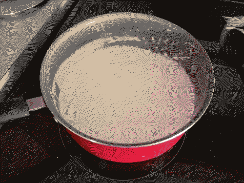

alfredo
ingredients
- 2 cups heavy/whipping cream
- 1/2 cup freshly grated parmesan cheese
- a lot of butter
- minced garlic or garlic powder
- pepper, italian seasoning
you will also need a saucepan and something to stir it with.
instructions
- grate parmesan cheese for later.
- melt butter in saucepan on stovetop.
- add 2 cups of heavy cream and heat until gently simmering (not boiling).
- add grated cheese and stir.
- add minced garlic and pepper/seasoning. stir.
- after a little while, take off heat.
obviously, this is just the recipe for the sauce. you should add pasta, protein, etc. of your choice to make it a meal.
some suggestions:
- any pasta. (penne, rotini, macaroni, shells, bowties, cavatappi, fusilli, angel hair, fettuccine, etc...)
- any protein. (chicken, shrimp, tofu?, etc...)
- veggies and other filler. (peppers, mushrooms, spinach, zucchini?, etc...)